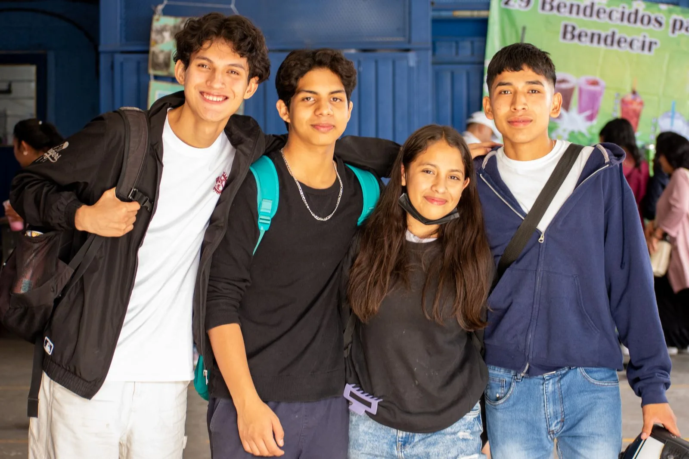
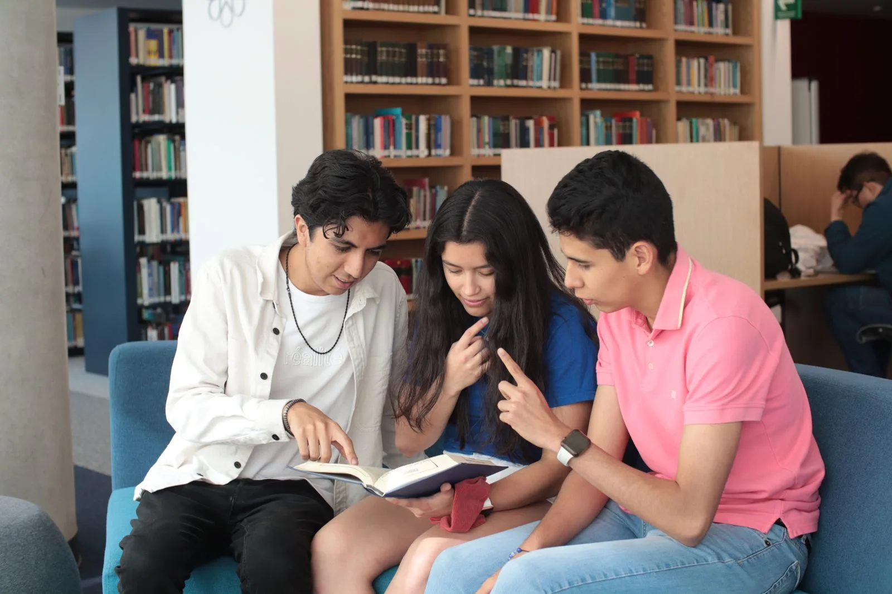
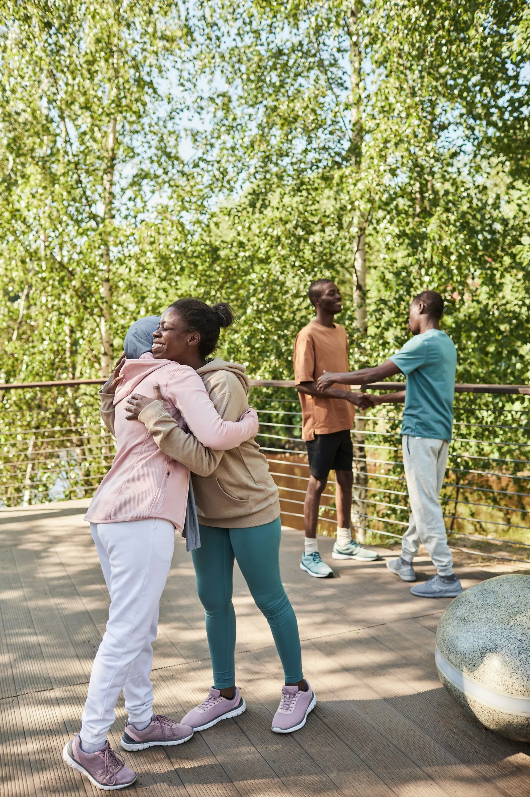
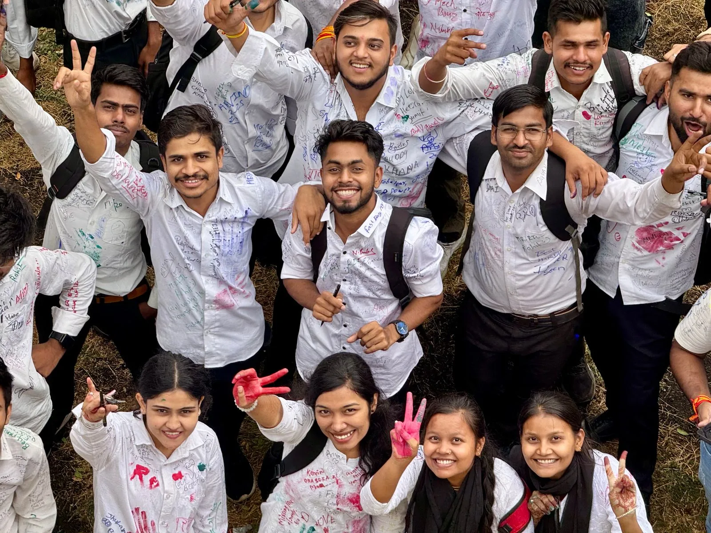

Nói lời hay,
giữ tình bạn.
Vấn đề sử dụng ngôn từ dung tục với bạn bè — và giải pháp khả thi cho học sinh chúng ta.
Vì sao chúng tớ chọn đề tài này?
Vì quanh chúng tớ, những câu “nói đùa” đang làm người khác đau — và thường không ai nhận ra. Nhóm chọn cách tiếp cận ba bước:
Lắng nghe trước — đặt cảm xúc của người nghe lên trước khi phán xét đúng sai.
Nhìn thẳng vấn đề — gọi đúng tên thói quen xấu, không né tránh, không đổ lỗi.
Làm được ngay — chỉ đề xuất việc mà học sinh có thể bắt đầu từ hôm nay.

Khi lời nói đùa…
không còn vui
Chửi thề, biệt danh xúc phạm đang trở thành “cửa miệng” trong nhiều nhóm bạn học sinh.
Câu “vui thôi mà” được dùng để che giấu những tổn thương có thật của người nghe.
Người nghe có thể cười gượng, nhưng tổn thương tích tụ dần theo từng ngày.
Lặp lại đủ lâu, xúc phạm bị bình thường hóa — cả nhóm coi đó là điều hiển nhiên.
Vì sao ngôn từ dung tục lan rộng?
Nhiễm từ mạng xã hội
Video, livestream, bình luận độc hại khiến từ ngữ dung tục xuất hiện dày đặc mỗi ngày.
Áp lực đồng trang lứa
Sợ bị coi là “nhạt”, không hòa nhập — nên nói theo cả nhóm dù bản thân không thoải mái.
Thói quen vô thức
Nói mà không nghĩ — từ dung tục bật ra như phản xạ trước cả khi nhận ra.
Thiếu kỹ năng cảm xúc
Khi giận dữ, căng thẳng mà không biết diễn tả, lời nói dễ trở thành công cụ làm đau.
Một câu nói — bốn vết thương
Ngôn từ dung tục không “tan trong không khí”. Nó để lại hậu quả thật, cho người nghe và cho cả người nói.
Tổn thương tinh thần
Người bị nhắm tới dễ tự ti, thu mình, lo lắng — thậm chí sợ đến lớp mỗi ngày.
Mầm mống bắt nạt
Từ lời nói xúc phạm đến cô lập, bắt nạt hội đồng — ranh giới rất mong manh.
Rạn nứt tình bạn
Niềm tin mất dần; những nhóm bạn tưởng thân thiết có thể tan rã vì lời nói.
Hình ảnh bản thân
Cách nói định hình cách người khác nhìn mình — thầy cô, bạn bè và cả cơ hội tương lai.
Ranh giới giữa đùa vui và xúc phạm
Đùa vui lành mạnh
- Cả hai phía cùng cười, cùng thoải mái.
- Dừng ngay khi bạn tỏ ra khó chịu.
- Không chạm vào ngoại hình, gia đình, khuyết điểm.
- Sau câu đùa, tình bạn gần nhau hơn.
Ngôn từ xúc phạm
- Chỉ một phía cười — phía kia im lặng.
- Nhắm vào điểm yếu, gia đình, ngoại hình.
- Lặp lại dù đã được nhắc nhở.
- Khiến bạn thu mình, sợ hãi, né tránh.
Quy tắc vàng: nếu phải nói “vui thôi mà” — nhiều khả năng nó không vui.
Ba bước làm chủ lời nói
Dừng 3 giây trước khi nói
Nhận diện cơn giận hoặc sự hưng phấn quá đà. Ba giây đủ để kịp hỏi: “Câu này có làm bạn đau không?”
Thử ngay: hít một hơi sâu trước khi đáp trảĐổi từ — nói cảm xúc thay vì chửi
Thay từ dung tục bằng lời diễn tả cảm xúc thật: “Mình đang rất bực”, “Mình thấy không được tôn trọng”.
Thử ngay: mỗi lần lỡ lời, đặt lại câu theo cách mớiXin lỗi chân thành khi lỡ lời
Sửa sai ngay, không ngụy biện “vui thôi mà”. Một lời xin lỗi đúng lúc cứu được cả tình bạn.
Thử ngay: “Mình xin lỗi, câu đó không hay”
Giữ nhóm bạn văn minh
Góp ý riêng tư
Nhắn riêng hoặc gặp riêng — không bêu riếu bạn trước đám đông, giữ thể diện cho nhau.
Không hùa theo
Im lặng cười theo cũng là tiếp tay. Không lặp lại, không lan truyền câu nói làm đau bạn.
Đặt “luật nhóm bạn”
Cùng thống nhất: không chửi thề, không biệt danh xúc phạm — nhắc nhau nhẹ nhàng khi quên.
Khen điều tích cực
Ghi nhận và khen ngợi cách nói văn minh của nhau — điều được khen sẽ được lặp lại.
Lớp học không ngôn từ dung tục
Cam kết chung
Cả lớp cùng ký cam kết “Lớp học không ngôn từ dung tục” — công khai, tự nguyện, cùng giữ.
Sinh hoạt chủ đề
Giờ sinh hoạt lớp về giao tiếp văn minh: đóng vai, xử lý tình huống thật của lớp.
Hộp thư điều muốn nói
Kênh ẩn danh để gửi điều khó nói — tổn thương được lắng nghe thay vì bị bỏ qua.
Điểm tựa thầy cô
Khi bị xúc phạm hoặc bắt nạt: báo giáo viên chủ nhiệm, tổng phụ trách — không phải chịu đựng một mình.
Chúng mình tin rằng…
Không thể cấm ngay lập tức, nhưng có thể thay dần từng thói quen — bắt đầu từ chính lời nói của mình.
Điều đáng lo không phải một câu chửi, mà là việc cả nhóm coi đó là bình thường và không ai lên tiếng.
Hình ảnh và lời nói đẹp lan tỏa điều tích cực nhanh hơn mọi lời cấm đoán — hãy làm điều hay trở nên đáng tự hào.
Người bị tổn thương cần được lắng nghe riêng, không bị bắt “phải vui lên” — tôn trọng cảm xúc là bước chữa lành đầu tiên.
Thử thách 7 ngày “Nói lời hay”
Nhóm mình mời cả lớp cùng thử — tích vào từng bước khi bạn hoàn thành:

“Lời nói không mất tiền mua —
lựa lời mà nói cho vừa lòng nhau.”
Cảm ơn thầy cô và các bạn đã lắng nghe.
Mỗi lời nói tử tế hôm nay là một tình bạn được giữ lại ngày mai.